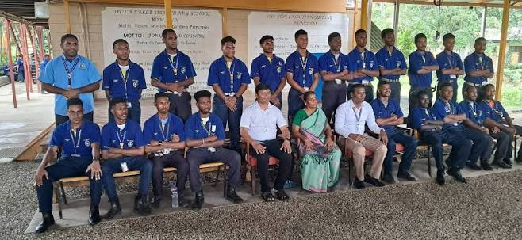
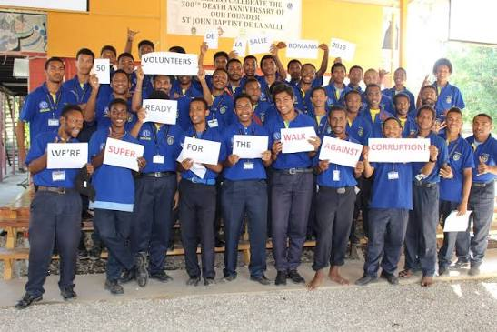
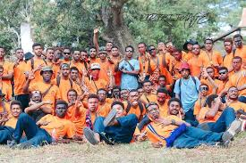
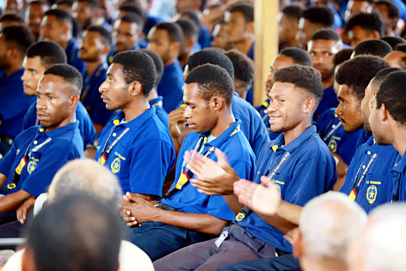

Celebrations and activities
School events encourage participation, create memories and strengthen the bonds between students, teachers and families.
Moments · People · Community
Learning and growing together—in classrooms, at school events and across our community.






Beyond the classroom
School events encourage participation, create memories and strengthen the bonds between students, teachers and families.
Students gain confidence when they take part in group activities and responsibilities that build leadership skills.
Activities and school traditions help build a sense of belonging across the campus community.
Events connect classroom learning with the wider community and develop practical life skills.